ZEROBASE / AI MENTORING / GROUP D
화면을 보며 따라가는 바이브 코딩, 배포, 어드민과 DB.
4주차의 선택 확장 자료입니다. 필수 제출은 PPT, PDF, HTML 중 포트폴리오 1개입니다. 이 가이드의 배포, DB, 어드민은 새 필수 제출 항목이 아닙니다.
이미지는 기존 교안 UI, 공식 UI 예시, 직접 실행한 로컬 예제로 구분했습니다. 가입, 결제, 새 DB 생성, 권한 변경은 이 실습 범위에 포함하지 않습니다. 배포는 대상과 공유 범위가 허용된 경우에만 별도로 진행합니다.
A-1 내 파일에서 Claude Code 열기 수정할 파일과 AI에게 전달할 범위를 먼저 맞춥니다.
기존 교안 UI / 공식 절차 대조 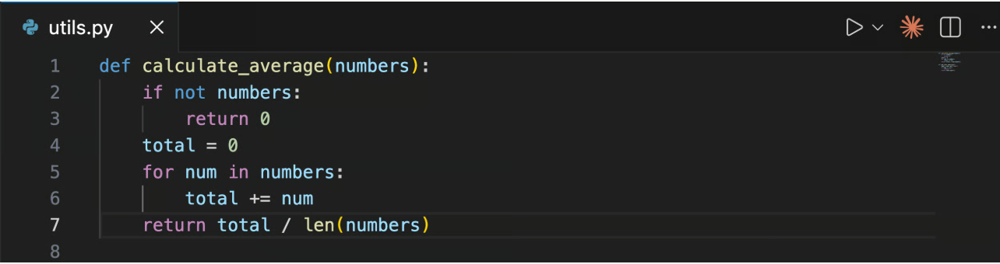
기존 KITECH 교안의 실제 VS Code 캡처. 오른쪽 위 주황색 Spark 아이콘을 찾으세요. 예시 파일은 utils.py이며, 실습에서는 내 HTML을 엽니다.이미지를 누르면 원본 크기로 확인할 수 있습니다. 화면 열기 VS Code의 File → Open Folder에서 내 프로젝트 사본을 엽니다. 설치와 로그인이 끝난 환경을 사용합니다.
파일 선택 왼쪽 Explorer에서 수정할 HTML 파일을 클릭합니다. 파일 탭이 열린 것을 확인합니다.
버튼 클릭 편집기 오른쪽 위 Spark 아이콘을 클릭합니다. 없으면 Cmd+Shift+P(Mac) 또는 Ctrl+Shift+P를 누르고 Claude Code를 입력해 Open in New Tab을 선택합니다.
입력 아래 요청을 Claude 입력칸에 붙여넣습니다. 파일 이름은 내 파일 이름으로 바꿉니다.
실행 보내기 버튼을 누릅니다. 읽은 파일과 설명이 맞는지 먼저 확인합니다.
현재 열린 HTML 파일을 읽고 입력, 처리, 출력, 외부 통신, 저장 위치를 설명해줘. 코드는 아직 수정하지 마. 파일을 읽지 못했다면 추측하지 말고 읽지 못했다고 알려줘. 성공하면 확인할 것 내가 연 파일을 근거로 입력, 처리, 출력의 설명이 나옵니다. 아직 새 기능이 실행됐다는 뜻은 아닙니다.
막혔을 때 아이콘이 없으면 파일 탭을 먼저 엽니다. Claude 메뉴도 없으면 설치 상태를 확인하고 이 단계에서 멈춥니다. 다른 폴더를 임의로 읽히지 않습니다.
절차 확인: 공식 문서 ↗
A-2 한 번의 입력과 한 가지 결과만 요청하기 만들 범위를 좁혀 바로 시험할 수 있게 합니다.
기존 교안 UI / 공식 절차 대조 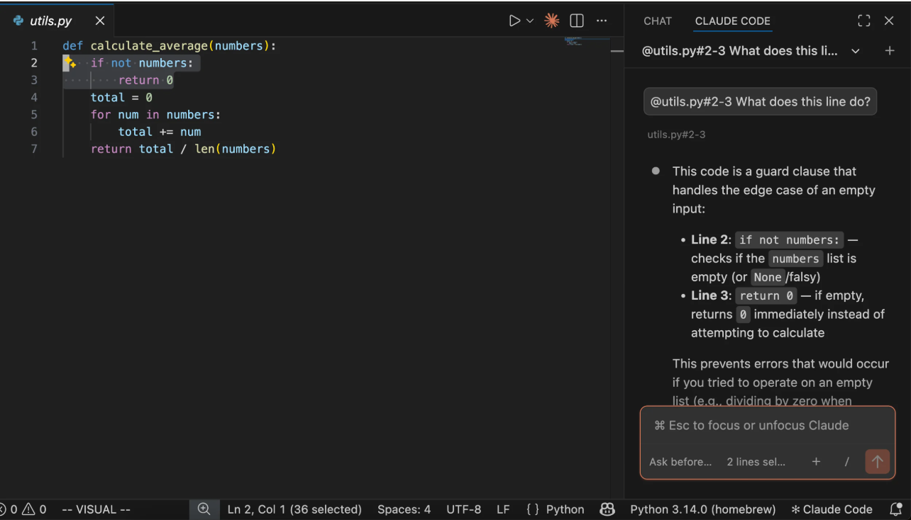
KITECH 원본 UI. 오른쪽 아래 입력칸과 참조한 파일 표시를 확인하세요. 코드와 영어 대화는 원본 예시입니다.이미지를 누르면 원본 크기로 확인할 수 있습니다. 화면 열기 a1에서 연 Claude 패널을 유지합니다.
파일 확인 입력칸의 참조 파일 이름이 내 HTML인지 확인합니다. 버전별 파일 첨부 메뉴나 @ 참조를 사용합니다.
입력 아래 요청을 붙여넣고, 기능을 더 붙이는 대신 비교 기록 하나를 만드는 데 집중합니다.
실행 보내기를 누릅니다. AI가 제안한 새 파일 이름과 바꿀 파일 목록을 읽습니다.
결과 확인 원본과 구분되는 새 HTML 파일이 제안됐는지 확인합니다.
검증 항목, 기대 결과, 실제 결과를 입력하고 비교 기록을 추가하는 단일 HTML을 만들어줘. 같으면 통과, 다르면 재확인으로 표시해. 빈 값은 추가하지 말고 해당 입력을 안내해. 외부 통신과 DB 없이 탭 메모리만 사용하고, 새로고침하면 지워진다는 안내를 넣어. 원본은 유지하고 validation-example.html로 저장해줘. 성공하면 확인할 것 검증 항목, 기대 결과, 실제 결과의 세 입력과 비교 기록 추가 버튼이 있는 작은 화면을 만들 수 있어야 합니다.
막혔을 때 DB, 로그인, 배포까지 한 번에 제안하면 “지금은 단일 HTML과 가상 데이터만”이라고 범위를 다시 지정합니다.
절차 확인: 공식 문서 ↗
A-3 변경 내용을 읽고 이번 수정만 수락하기 어떤 코드가 바뀌는지 확인한 뒤 실행합니다.
기존 교안 UI / 최신 버튼 이름 문서 대조 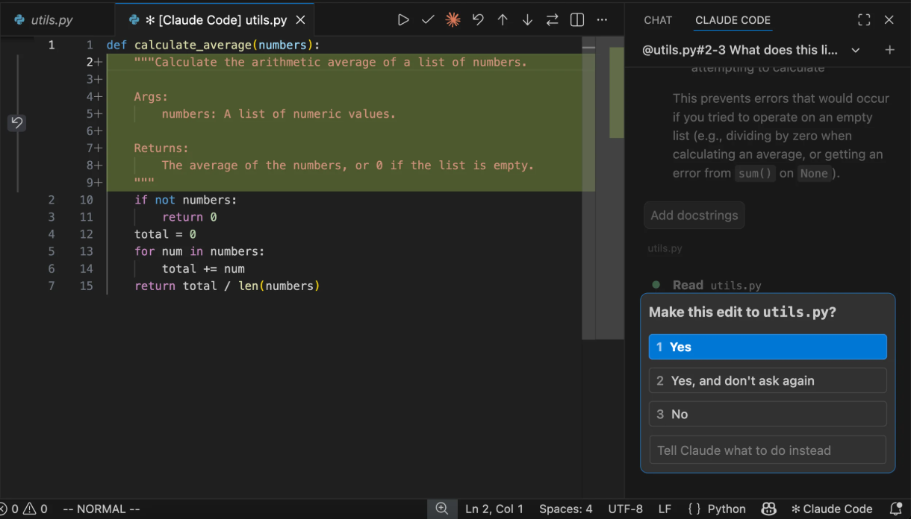
KITECH 원본의 변경 검토 UI. 초록색 추가 코드와 오른쪽 1 Yes / 3 No가 보입니다. 최신 버전은 Accept / Reject 등으로 표시될 수 있습니다.이미지를 누르면 원본 크기로 확인할 수 있습니다. 화면 열기 Claude가 제안한 변경 파일이나 diff를 엽니다.
비교 추가된 코드와 삭제된 코드를 읽고 외부 요청, 파일 삭제, 비밀 값이 들어가는지 확인합니다.
입력 모르는 부분은 “이 코드가 외부로 보내는 값과 저장하는 곳을 설명해줘”라고 질문합니다.
클릭 범위가 맞는 이번 변경만 Yes 또는 Accept로 수락합니다. 맞지 않으면 No 또는 Reject를 선택합니다.
실행 준비 저장된 새 HTML 파일 이름을 확인합니다. 일괄 권한 허용은 이 실습에 필요하지 않습니다.
성공하면 확인할 것 새 파일에 요청한 기능만 들어갑니다. 수락 표시와 기능의 정상 작동은 다음 단계에서 따로 확인합니다.
막혔을 때 원본까지 바뀌면 원본 사본으로 되돌리고 수정 대상 파일을 다시 지정합니다. 백업이 없으면 추가 수정을 멈추고 변경 목록부터 확인합니다.
절차 확인: 공식 문서 ↗
A-4 브라우저에서 정상 입력과 빈 입력 시험하기 AI가 만들었다는 설명을 실제 실행 증거로 바꿉니다.
직접 실행 확인 / 로컬 예제 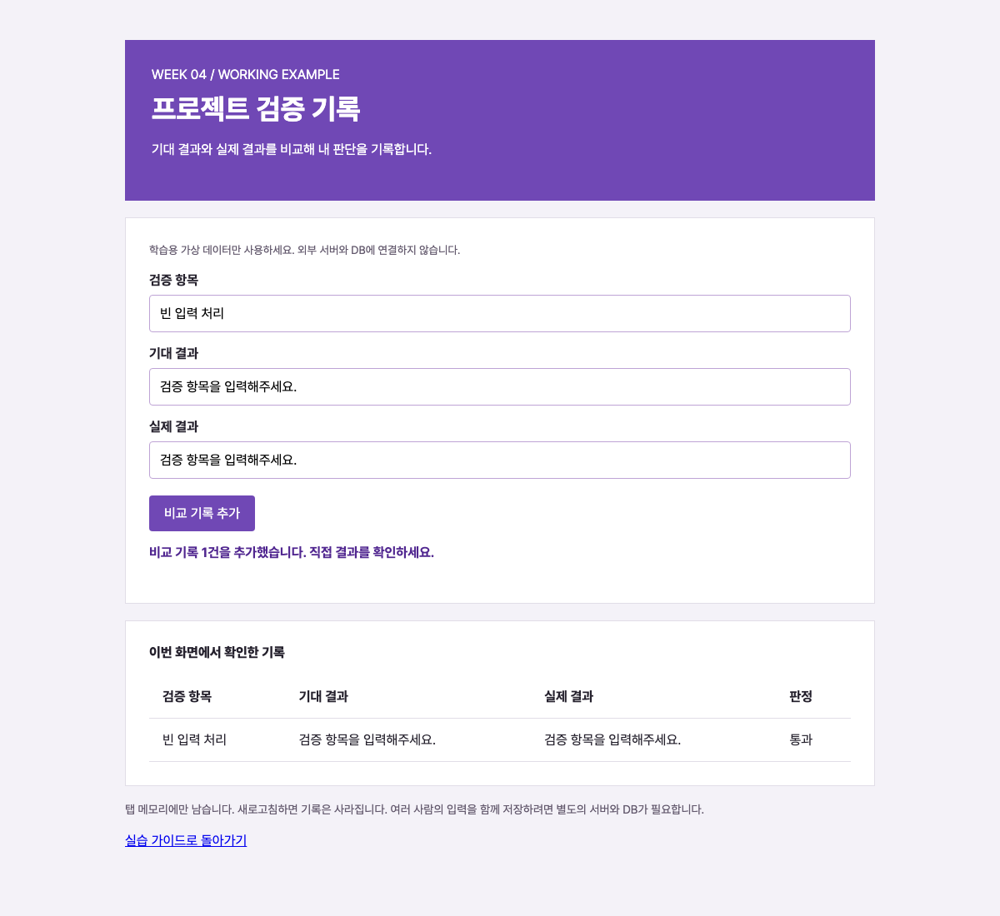
이 가이드에 포함한 HTML을 localhost에서 실제 실행한 화면입니다. 외부 AI 호출과 DB 연결은 없습니다.이미지를 누르면 원본 크기로 확인할 수 있습니다. 화면 열기 아래 로컬 예제 열기를 클릭합니다. 내 파일을 만들었다면 파일을 브라우저로 열어 같은 순서로 시험합니다.
입력 검증 항목: 빈 입력 처리 / 기대 결과: 검증 항목을 입력해주세요. / 실제 결과: 검증 항목을 입력해주세요. 를 입력합니다.
성공 확인 표에 새 행과 통과가 나타나는지 봅니다. 실제 결과만 다르게 입력하고 다시 누르면 재확인이 나와야 합니다.
예외 확인 새로고침 후 세 칸을 비우고 비교 기록 추가를 누릅니다. 안내가 나오고 행은 추가되지 않아야 합니다.
로컬 예제 열기 ↗
빈 입력의 실제 화면 보기 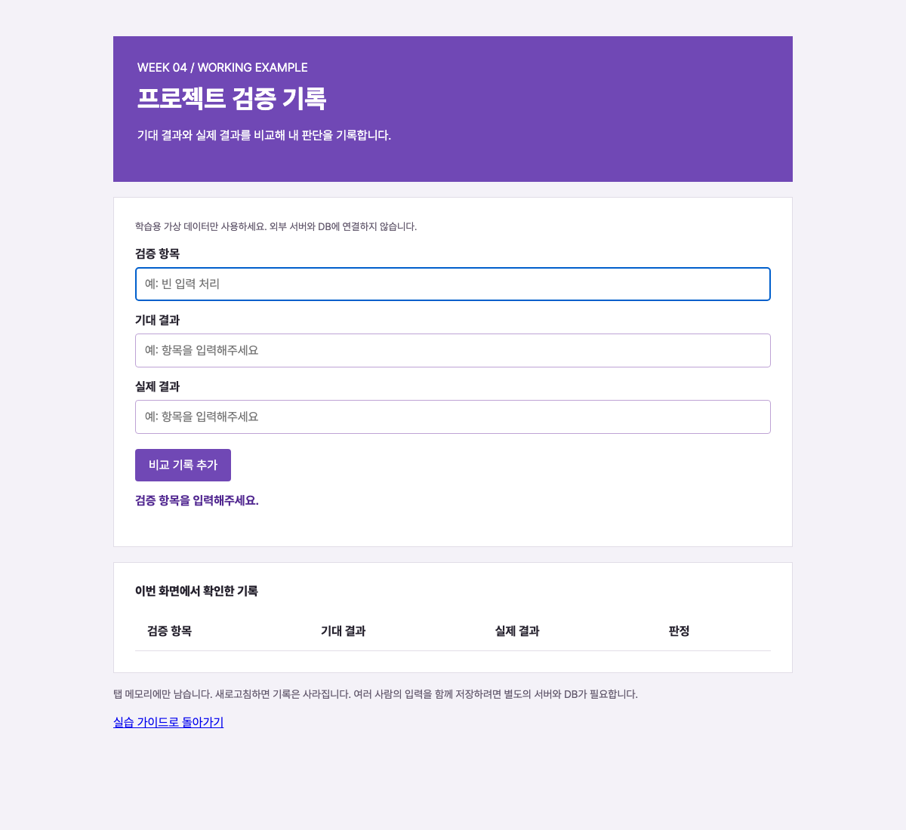
성공하면 확인할 것 정상 입력 1건, 다른 결과 1건, 빈 입력 1건을 구분해서 확인합니다. 예제의 판정은 문자열 일치 비교이며 AI 품질 평가를 대신하지 않습니다.
막혔을 때 버튼이 반응하지 않으면 저장 후 새로고침합니다. 계속 실패하면 사용한 입력, 기대 결과, 실제 화면을 함께 적어 오류 수정만 요청합니다.
절차 확인: 공식 문서 ↗
B-1 올릴 파일과 실행 환경을 구분하기 HTML 공개와 AI 또는 DB의 서버 실행을 구분합니다.
직접 실행 확인 / 로컬 예제 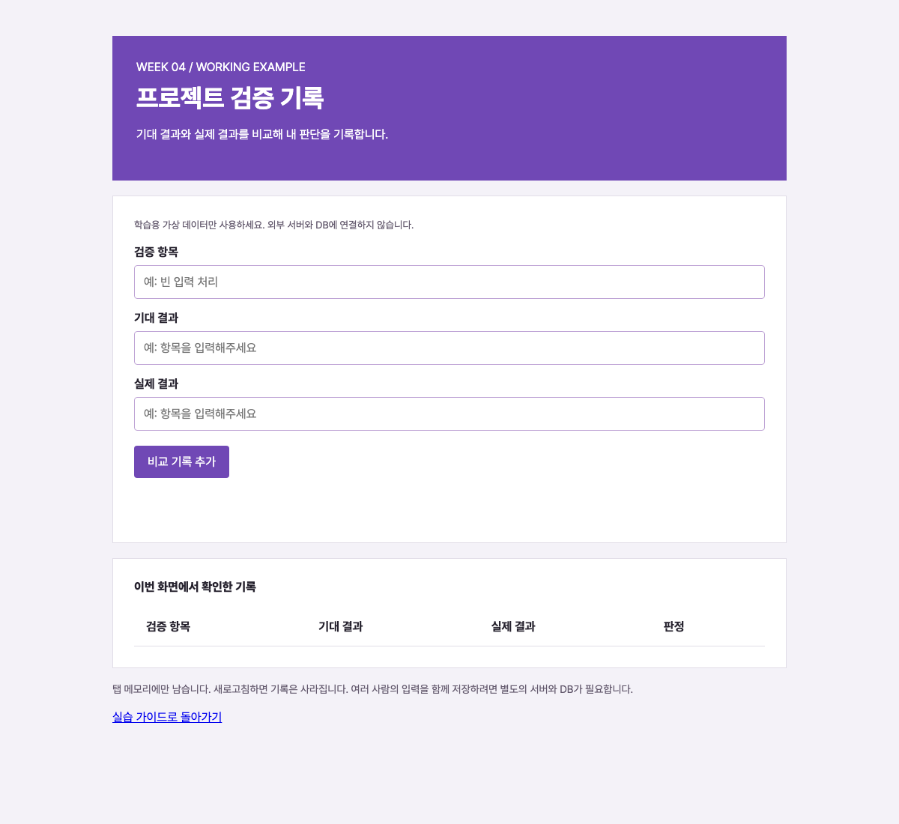
외부 연결 없는 HTML의 실제 첫 화면. 이 화면이 열린다고 서버, AI 호출, DB 저장까지 준비된 것은 아닙니다.이미지를 누르면 원본 크기로 확인할 수 있습니다. 화면 열기 a4에서 확인한 HTML과 이미지 파일이 있는 폴더를 VS Code에서 엽니다.
사본 준비 Explorer에서 공개용 사본 폴더를 만들고 필요한 HTML, CSS, JS, 이미지만 넣습니다. 폴더명은 public-preview 등으로 구분합니다.
입력 Claude에 아래 요청을 보내 실제 파일 목록과 외부 의존성을 읽기만 하게 합니다.
로컬 실행 공개용 사본의 시작 HTML을 브라우저로 열어 버튼과 이미지가 작동하는지 확인합니다.
결과 확인 파일 목록에 키, 비공개 문서와 개인 자료가 없고 로컬 기능이 유지되는지 확인합니다.
공개용 사본 폴더의 파일 목록만 읽어줘. 개인정보, 비밀 값, 내부 문서, 절대 경로가 있으면 위치를 알려줘. HTML이 외부 API나 DB를 필요로 하는지도 설명해줘. 파일 업로드, 배포, 삭제는 하지 마. 성공하면 확인할 것 공개용 파일 목록과 필요한 서버 기능의 유무를 설명할 수 있습니다. 이 단계는 업로드를 하지 않습니다.
막혔을 때 이미지가 빠지면 HTML의 상대 경로와 이미지 파일 위치를 같이 확인합니다. AI가 로컬에서만 실행되는 구조라면 서버 실행 설계를 별도로 적습니다.
절차 확인: 공식 문서 ↗
B-2 기존 Vercel 프로젝트와 Preview 대상 확인하기 다른 프로젝트나 운영 주소에 실수로 반영하지 않도록 대상을 먼저 확인합니다.
공식 UI 자료 / 계정 실행 미확인 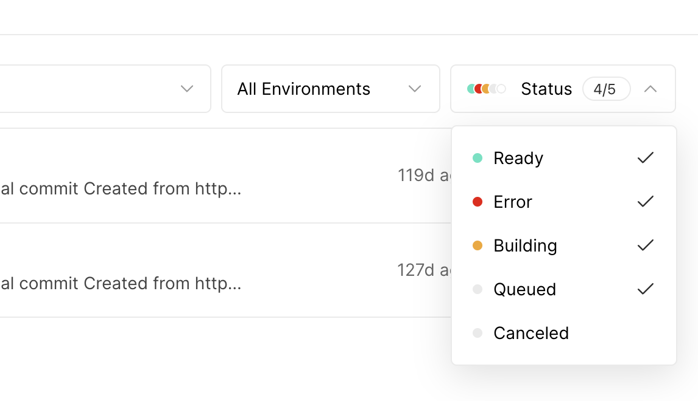
Vercel 공식 문서의 실제 상태 필터 화면. All Environments와 Status가 보입니다. 계정별 현재 화면에서 직접 실행한 캡처는 아닙니다.이미지를 누르면 원본 크기로 확인할 수 있습니다. 화면 열기 기존에 로그인된 Vercel 대시보드를 엽니다. 팀 선택기와 프로젝트 이름을 먼저 확인합니다.
클릭 기존 프로젝트 → Deployments로 이동합니다. 새 프로젝트를 만들지 않습니다.
입력 대신 선택 환경 필터에서 Preview를 고릅니다. 처음 사용하는 프로젝트라면 여기서 담당자와 연결 대상을 확인합니다.
로컬 대조 VS Code에서 .vercel/project.json의 projectName과 projectId를 읽어 화면의 프로젝트와 맞춥니다. 인증키 파일은 열거나 공유하지 않습니다.
결과 확인 팀, 프로젝트, Preview 세 항목을 기록합니다. 필터는 조회 조건이며 새 배포를 만들지 않습니다.
성공하면 확인할 것 어느 프로젝트의 어떤 환경을 확인하고 있는지 분명합니다. Preview 목록이 비어 있어도 새 프로젝트를 만들 이유는 아닙니다.
막혔을 때 프로젝트가 다르거나 .vercel 연결 파일이 없으면 중단합니다. 자동 설정 질문을 계속 넘기거나 새 계정을 만들지 않습니다.
절차 확인: 공식 문서 ↗
B-3 미리보기 실행 요청을 준비하고 승인 범위를 확인하기 배포 요청과 운영 반영을 분리합니다.
공식 문서 화면 / 배포 미실행 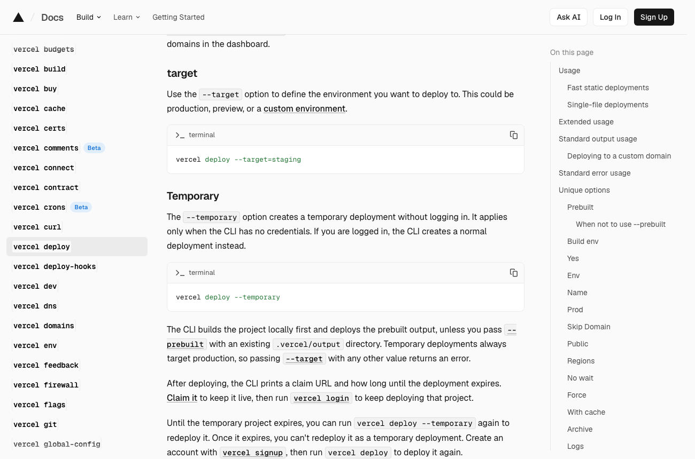
현재 Vercel CLI 공식 문서에서 직접 캡처한 명령 안내입니다. 이 가이드 작성 중 배포 명령은 실행하지 않았습니다.이미지를 누르면 원본 크기로 확인할 수 있습니다. 화면 열기 b2에서 대상이 확인된 기존 프로젝트 폴더의 터미널을 엽니다. 또는 Claude에 기존 연결 폴더를 지정합니다.
입력 아래 요청을 복사해 프로젝트 이름과 공개 파일 목록을 내 것으로 바꿉니다.
사전 확인 예정된 명령과 업로드할 경로를 읽습니다. CLI의 Preview 대상은 --target=preview로 명시할 수 있습니다.
실행 조건 해당 프로젝트의 미리보기 업로드를 허용받은 뒤에만 실행합니다. 현재 로컬 초안 작업에서는 여기까지 준비하고 멈춥니다.
성공 기준 실행했다면 반환된 배포 주소와 Preview 환경을 기록합니다. 주소가 생겼다는 사실만으로 기능 성공이라고 쓰지 않습니다.
기존 프로젝트 [프로젝트명]의 연결 정보를 읽고, 공개용 파일만 Preview로 올릴 계획을 보여줘. 팀, 프로젝트 ID, 환경, 업로드 파일 목록과 실행 명령을 먼저 제시해줘. 지금은 실행하지 마. 운영 배포, 신규 프로젝트 생성, 접근 권한 변경은 제외해줘. 성공하면 확인할 것 미리보기 대상과 허용된 파일 범위를 검토할 수 있습니다. 실제 실행 결과는 별도 확인 전까지 미실행으로 남깁니다.
막혔을 때 로그인, 가입, 결제나 새 프로젝트 설정이 나오면 멈춥니다. --prod 또는 운영 승격 명령으로 대체하지 않습니다.
절차 확인: 공식 문서 ↗
B-4 Ready와 실제 화면을 각각 확인하기 빌드 상태와 사용자가 보는 결과를 따로 점검합니다.
공식 UI 자료 / 계정 실행 미확인 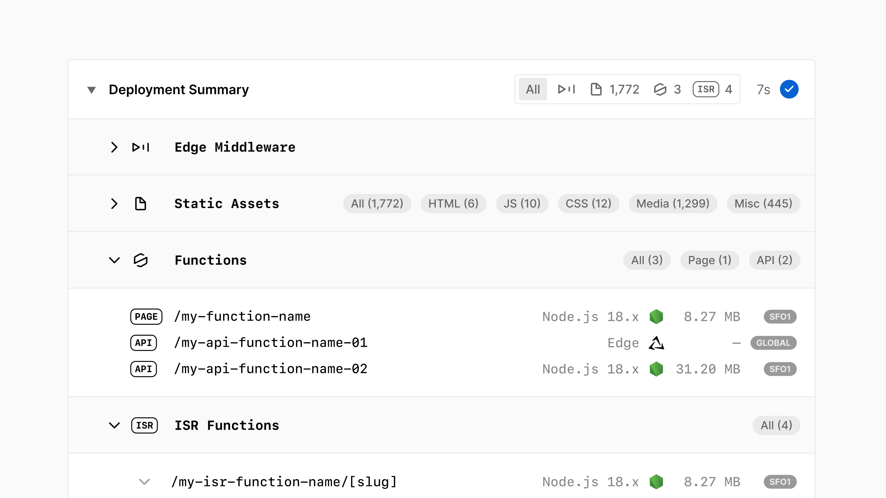
Vercel 공식 문서의 Deployment Summary UI. 파일과 함수의 구성 예시이며 내 프로젝트의 성공 기록이 아닙니다.이미지를 누르면 원본 크기로 확인할 수 있습니다. 화면 열기 허용된 미리보기 배포를 실행한 경우 해당 프로젝트의 Deployments 목록을 엽니다.
클릭 환경과 생성 시각이 맞는 배포를 선택합니다. Status가 Ready인지 확인합니다.
주소 열기 해당 배포의 URL을 새 탭에서 엽니다. 대표 운영 주소와 혼동하지 않습니다.
입력과 실행 a4와 같은 정상 입력과 빈 입력을 넣고 버튼을 누릅니다. 모바일 너비에서도 확인합니다.
성공 확인 최신 문구, 이미지, 버튼, 예외 안내가 모두 맞는지 기록합니다. Deployment Summary에서 구성도 함께 확인합니다.
성공하면 확인할 것 Ready와 화면 동작이 모두 확인되어야 미리보기 검증을 마쳤다고 말할 수 있습니다.
막혔을 때 404는 시작 파일과 경로, 이미지 누락은 상대 경로를 확인합니다. 인증 화면이 나오면 허용된 사용자 범위를 확인하고 보호 설정을 임의로 끄지 않습니다.
절차 확인: 공식 문서 ↗
B-5 서버에서만 쓸 값과 적용 환경 확인하기 환경 변수를 HTML 안의 비밀 값으로 착각하지 않도록 합니다.
공식 UI 자료 / 설정 변경 미실행 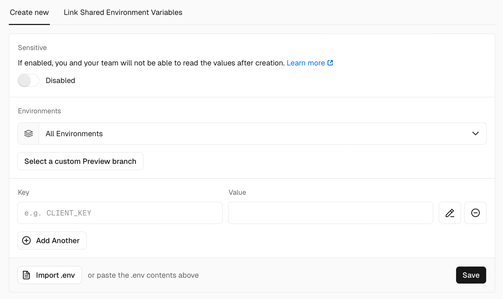
공식 환경 변수 입력 화면. Environments, Key, Value, Save 위치입니다. 값은 비어 있는 공식 예시이며 이번 작업에서는 저장하지 않습니다.이미지를 누르면 원본 크기로 확인할 수 있습니다. 화면 열기 기존 프로젝트의 Settings → Environment Variables를 엽니다.
클릭 위치 확인 Environments 선택과 Key, Value의 위치를 확인합니다. 정적 HTML만 필요하면 새 변수를 추가할 이유가 없습니다.
입력 계획 필요한 경우 비밀 값 자체 대신 변수 이름과 서버 사용 위치만 설계에 적습니다. 예: 서버의 AI_API_KEY.
현재 할 일 Preview와 Production의 적용 범위를 읽습니다. 이 가이드에서는 값 입력과 Save를 실행하지 않습니다.
성공 기준 어떤 서버 코드가 어떤 환경의 값을 읽는지 설명할 수 있어야 합니다. 브라우저에 포함되는 값은 비밀로 취급할 수 없습니다.
성공하면 확인할 것 변수의 이름, 사용 위치, 적용 환경을 구분합니다. 변수 추가가 끝났거나 AI 호출이 성공했다고 표시하지 않습니다.
막혔을 때 인증 오류가 나면 값 자체를 채팅에 붙이지 말고 변수 이름, 대상 환경, 오류 코드만 확인합니다. 실제 수정은 담당자의 허용 범위 안에서 진행합니다.
절차 확인: 공식 문서 ↗
B-6 오류가 나면 Build Logs부터 읽기 같은 배포를 반복하기 전에 실패 원인을 좁힙니다.
공식 UI 자료 / 계정 실행 미확인 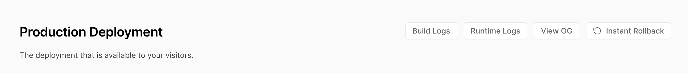
Vercel 공식 화면의 Build Logs 버튼. Other 프레임워크에서는 Deploy Logs로 보일 수 있습니다.이미지를 누르면 원본 크기로 확인할 수 있습니다. 화면 열기 실패한 배포의 상세 화면이나 프로젝트 개요를 엽니다.
클릭 Build Logs 또는 Deploy Logs를 엽니다. Runtime Logs와 구분합니다.
입력 대신 선택 처음 나타난 오류와 바로 앞의 파일 경로나 빌드 단계를 읽습니다.
수정 요청 비밀 값과 개인 경로를 가린 오류 메시지, 바꾼 파일, 기대 결과를 묶어 수정 요청을 작성합니다.
재확인 로컬에서 오류를 고친 뒤 같은 입력을 다시 시험합니다. 추가 업로드는 따로 허용받은 범위에서 진행합니다.
성공하면 확인할 것 어느 단계에서 무엇 때문에 실패했는지와 수정 후 확인할 항목이 한 문장으로 남습니다.
막혔을 때 Ready인데 버튼만 실패하면 빌드 오류가 아닐 수 있습니다. 브라우저 오류와 API 응답을 확인하고, 보안 설정을 해제하는 방식으로 해결하지 않습니다.
절차 확인: 공식 문서 ↗
C-1 새로고침해서 저장이 필요한지 확인하기 화면에 보이는 행과 DB에 남은 기록을 구분합니다.
직접 실행 확인 / 로컬 예제 실제 로컬 예제를 새로 열었을 때의 빈 표입니다. 기록은 탭 메모리에만 있으므로 새로고침하면 사라집니다.이미지를 누르면 원본 크기로 확인할 수 있습니다. 화면 열기 a4의 예제를 열고 가상 검증 기록 한 행을 추가합니다.
확인 표에 행이 생긴 것을 봅니다. 이것만으로 DB 저장이라고 말하지 않습니다.
결과 비교 행이 사라지는지 확인합니다. 다른 사람이 같은 주소를 열었을 때 같은 목록을 볼 수 있는지도 구분합니다.
다음 판단 단순 결과 공유면 HTML만, 여러 사람의 입력을 계속 보관해야 하면 저장소와 관리자 기능이 필요한 것으로 계획합니다.
성공하면 확인할 것 공유 화면, 서버의 입력 검수, DB 저장, 어드민 조회의 역할을 구분할 수 있습니다. Supabase 대시보드는 개발자용 관리 도구이며 서비스용 어드민과 같지 않습니다.
막혔을 때 브라우저 저장소를 사용한 프로젝트라면 새로고침 뒤 남을 수 있습니다. 그래도 여러 사용자와 기기가 공유하는 DB인지 별도로 확인합니다.
절차 확인: 공식 문서 ↗
C-2 기존 테스트 DB의 Table Editor 열기 이미 있는 가상 데이터를 조회하며 관리 화면을 읽습니다.
공식 UI 예시 2025-05 / 계정 실행 미확인 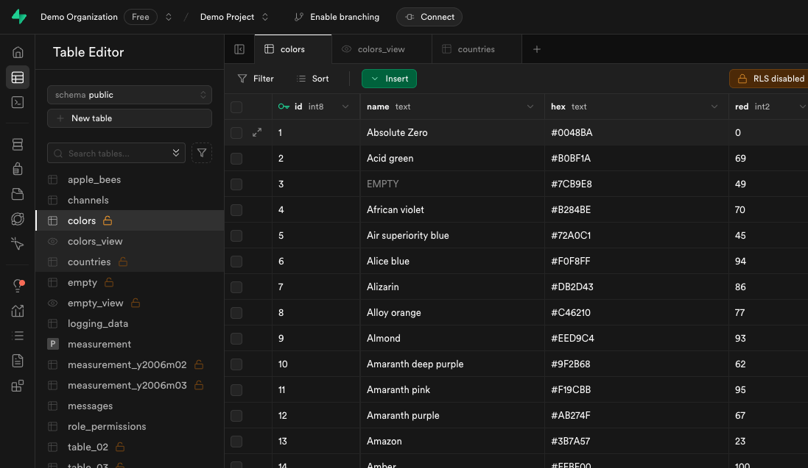
Supabase 공식 Demo Project의 Table Editor 화면(2025-05 공개 자료). 왼쪽 Table Editor와 테이블 목록, 위 Filter / Sort를 확인하세요. 현재 계정 UI는 미확인입니다.이미지를 누르면 원본 크기로 확인할 수 있습니다. 화면 열기 사용이 허용된 기존 Supabase 테스트 프로젝트를 엽니다. 계정이나 프로젝트가 없으면 공식 화면으로 위치만 익힙니다.
클릭 왼쪽 Table Editor를 선택합니다. 기존 테이블 목록이 나타납니다.
선택 담당자가 지정한 가상 데이터 테이블을 고릅니다. 공식 예시는 colors이며 내 환경에 이 테이블이 있다고 가정하지 않습니다.
대조 열 이름, 자료형, 행 수를 미리 정한 저장 항목표와 비교합니다.
성공 확인 내가 보고 있는 프로젝트, schema, 테이블 이름과 열을 기록합니다. New table은 누르지 않습니다.
성공하면 확인할 것 어떤 자료를 어느 테이블에서 읽는지 분명합니다. 실제 개인정보 테이블은 실습 대상으로 사용하지 않습니다.
막혔을 때 목록이 없으면 프로젝트와 schema, 계정 권한을 확인합니다. 빈 목록을 해결하려고 새 DB나 테이블을 만들지 않습니다.
절차 확인: 공식 문서 ↗
C-3 열 머리글에서 정렬하기 조회 순서를 바꾸는 일과 데이터를 수정하는 일을 구분합니다.
공식 UI 예시 2025-05 / 계정 실행 미확인 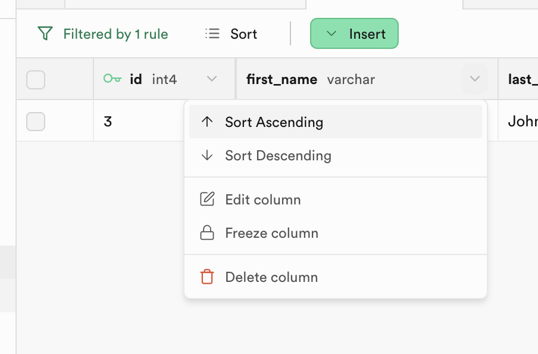
Supabase 공식 Table Editor UI(2025-05). 열 머리글의 아래 화살표 메뉴에 Sort Ascending / Sort Descending이 표시됩니다.이미지를 누르면 원본 크기로 확인할 수 있습니다. 화면 열기 c2의 허용된 가상 데이터 테이블을 유지합니다.
클릭 정렬할 숫자나 날짜 열 머리글의 아래 화살표를 누릅니다.
선택 Sort Ascending을 선택합니다. 예시 이미지에서는 id 열입니다.
실행 결과 첫 행과 마지막 행의 값이 오름차순인지 비교합니다. 반대 순서가 필요하면 Sort Descending을 선택합니다.
성공 확인 표시 순서가 바뀌고 원래 값 자체는 바뀌지 않았는지 확인합니다.
성공하면 확인할 것 정렬 기준과 방향을 설명할 수 있습니다. 상태 변경이나 삭제를 실행하지 않습니다.
막혔을 때 예상과 다르면 자료형과 기존 Filter 조건을 확인합니다. Edit column이나 Delete column을 선택하지 않습니다.
절차 확인: 공식 문서 ↗
C-4 접근 권한 표시를 읽고 변경은 멈추기 테이블이 보이는 것과 앱 사용자에게 허용된 범위를 구분합니다.
공식 UI 예시 / 권한 변경 미실행 공식 예시 오른쪽 위에 RLS disabled가 표시됩니다. 이 상태를 안전한 설정으로 따라 하지 않습니다. 표시의 의미를 읽기 위한 화면입니다.이미지를 누르면 원본 크기로 확인할 수 있습니다. 화면 열기 c2에서 확인한 테이블의 권한 표시를 읽습니다.
위치 확인 화면 위 RLS 또는 정책 관련 표시를 찾습니다. 현재 UI의 위치가 다르면 공식 문서를 함께 확인합니다.
입력 계획 누가 어떤 행을 읽고 추가하고 바꿀 수 있어야 하는지 역할표로 적습니다. 예: 본인 기록 조회 / 관리자 전체 검토.
대조 담당자에게 기존 정책이 이 범위와 맞는지 확인을 요청합니다. 대시보드 조회 성공만으로 앱의 권한 검증을 대신하지 않습니다.
성공 기준 확인한 권한과 미확인 권한을 구분해서 기록합니다. 정책을 켜거나 끄는 버튼은 실행하지 않습니다.
성공하면 확인할 것 RLS의 유무만이 아니라 정책과 사용자별 접근까지 확인해야 한다는 점을 설명할 수 있습니다. secret 또는 service_role 키는 브라우저에 넣지 않습니다.
막혔을 때 권한 오류가 나도 RLS를 끄거나 전체 공개 정책을 추가하지 않습니다. 요청한 사용자와 작업, 오류를 담당자에게 전달합니다.
절차 확인: 공식 문서 ↗
C-5 SQL Editor에서 읽기 쿼리만 검토하기 저장 항목과 실제 값의 연결을 확인하는 방법을 익힙니다.
공식 UI 예시 / DB 쿼리 미실행 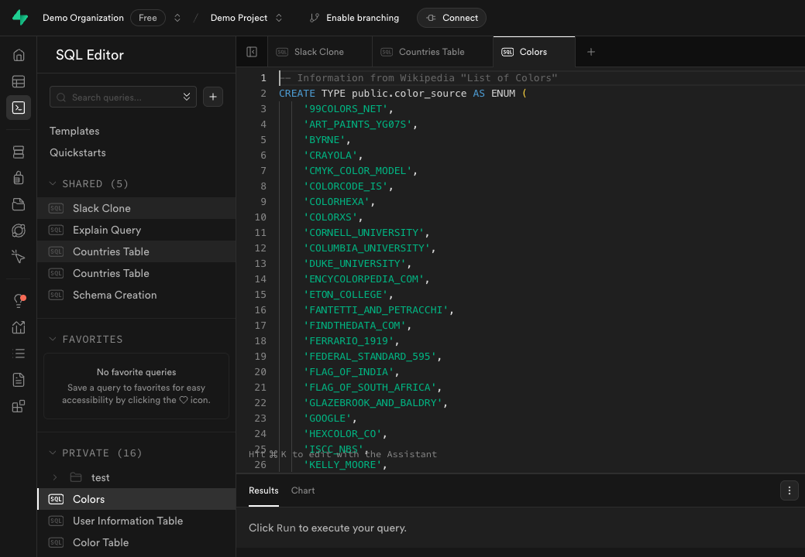
Supabase 공식 SQL Editor 예시(2025-05). 왼쪽 SQL Editor, 가운데 입력창, 아래 Results 위치입니다. 이미지의 CREATE 코드는 이 실습에서 실행하지 않습니다.이미지를 누르면 원본 크기로 확인할 수 있습니다. 화면 열기 담당자가 읽기 조회를 허용한 기존 가상 테이블이 있을 때만 SQL Editor를 엽니다.
클릭 새 쿼리 탭을 엽니다. 프로젝트를 새로 만들지 않습니다.
입력 아래 SELECT 문을 검토합니다. public.colors와 열 이름은 c2에서 실제 확인한 가상 테이블에 맞춥니다. 존재를 확인하지 못했다면 실행하지 않습니다.
실행 조건 조회가 허용된 환경에서 SELECT만 실행합니다. CREATE, INSERT, UPDATE, DELETE를 실행하지 않습니다. 이번 가이드 작성 중에는 실행하지 않았습니다.
성공 확인 Results의 열과 최대 5개 행을 Table Editor와 대조합니다. SQL Editor 조회 성공이 일반 앱 사용자의 접근 성공을 뜻하지는 않습니다.
-- 아래는 공식 Demo Project의 colors를 가정한 읽기 예시입니다.
-- 내 프로젝트에 해당 테이블과 열이 존재하는지 먼저 확인하세요.
SELECT id, name
FROM public.colors
ORDER BY id ASC
LIMIT 5; 성공하면 확인할 것 저장된 값의 조회 방법과 확인할 결과가 명확합니다. 실제 쿼리 결과가 없으면 미실행으로 기록합니다.
막혔을 때 relation does not exist는 테이블과 schema, permission denied는 권한을 확인합니다. 권한을 자동으로 넓히거나 운영 DB로 바꾸지 않습니다.
절차 확인: 공식 문서 ↗
내 포트폴리오에 남길 기록 A: 정상 입력과 빈 입력, 실제 결과와 내가 고친 기준 B: 공개 파일, 확인한 환경과 주소, 아직 실행하지 않은 배포 단계 C: 저장 필요성, 읽은 테이블과 권한 범위, 미확인 항목 실제로 한 작업과 다음에 할 계획을 구분해 적습니다.
4주차 21장으로 돌아가기 →